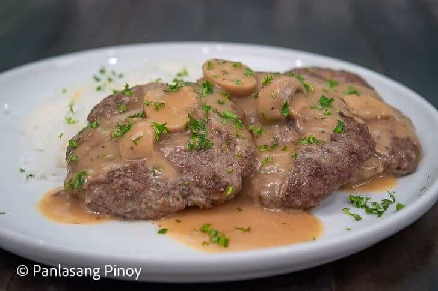

Home Page
Burger steak

Burger Steak
Description
Burger steak is a Filipino-style dish made with seasoned ground beef
patties served with a rich mushroom and onion gravy. The tender patties
are browned in a pan and then covered in the savory sauce.
It is commonly served with steamed white rice, making it a comforting and
filling meal.
Ingredients
- 1 pound ground beef
- 1/2 cup breadcrumbs
- 1 egg
- 1 small onion, finely chopped
- 2 cloves garlic, minced
- 1 tablespoon soy sauce
- 1/2 teaspoon salt
- 1/2 teaspoon ground black pepper
- 2 tablespoons cooking oil
- 1 small onion, sliced
- 1 cup sliced mushrooms
- 2 cups beef broth
- 1 tablespoon flour
- Steamed white rice, for serving
Steps
-
Combine the ground beef, breadcrumbs, egg, chopped onion, garlic, soy
sauce, salt, and black pepper in a bowl.
-
Mix until combined, then shape the mixture into oval-shaped patties.
-
Heat the cooking oil in a pan over medium heat and fry the patties until
browned and cooked through. Set them aside.
-
In the same pan, sauté the sliced onion and mushrooms until softened.
-
Sprinkle the flour over the vegetables and stir until evenly combined.
-
Gradually add the beef broth while stirring. Simmer until the gravy
thickens.
-
Return the burger patties to the pan and simmer them in the gravy for a
few minutes.
-
Serve the burger steak hot with steamed white rice and mushroom gravy.